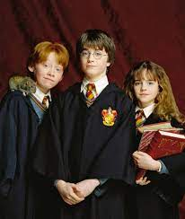
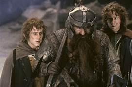

Reading books may have several physical and mental benefits. These include strengthening your brain, increasing your ability to empathize, reducing stress, and building your vocabulary, among others.

In the 11th century, a Japanese woman known as Murasaki Shikibu wrote “The Tale of Genji,” a 54-chapter story of courtly seduction believed to be the world’s first novel.Over 1,000 years later, people the world over are still engrossed by novels — even in an era where stories appear on handheld screens and disappear 24 hours later.What exactly do human beings get from reading books? Is it just a matter of pleasure, or are there benefits beyond enjoyment? The scientific answer is a resounding “yes.”Reading books benefits both your physical and mental health, and those benefits can last a lifetime. They begin in early childhood and continue through the senior years. Here’s a brief explanation of how reading books can change your brain — and your body — for the better.

A growing body of research indicates that reading literally changes your mind.Using MRI scans, researchers have confirmedTrusted Source that reading involves a complex network of circuits and signals in the brain. As your reading ability matures, those networks also get stronger and more sophisticated.In one studyTrusted Source conducted in 2013, researchers used functional MRI scans to measure the effect of reading a novel on the brain. Study participants read the novel “Pompeii” over a period of 9 days. As tension built in the story, more and more areas of the brain lit up with activity.Brain scans showed that throughout the reading period and for days afterward, brain connectivity increased, especially in the somatosensory cortex, the part of the brain that responds to physical sensations like movement and pain.
And speaking of sensing pain, researchTrusted Source has shown that people who read literary fiction — stories that explore the inner lives of characters — show a heightened ability to understand the feelings and beliefs of others.Researchers call this ability the “theory of mind,” a set of skills essential for building, navigating, and maintaining social relationships.While a single session of reading literary fiction isn’t likely to spark this feeling, researchTrusted Source shows that long-term fiction readers do tend to have a better-developed theory of mind.
Harry Potter is a series of seven fantasy novels written by British author J. K. Rowling. The novels chronicle the lives of a young wizard, Harry Potter, and his friends Hermione Granger and Ron Weasley, all of whom are students at Hogwarts School of Witchcraft and Wizardry. The main story arc concerns Harry's conflict with Lord Voldemort, a dark wizard who intends to become immortal, overthrow the wizard governing body known as the Ministry of Magic, and subjugate all wizards and Muggles (non-magical people).
The original seven books were adapted into an eight-part namesake film series by Warner Bros. Pictures. In 2016, the total value of the Harry Potter franchise was estimated at $25 billion,[7] making Harry Potter one of the highest-grossing media franchises of all time. Harry Potter and the Cursed Child is a play based on a story co-written by Rowling.
The Lord of the Rings is an epic[1] high fantasy novel[a] by the English author and scholar J. R. R. Tolkien. Set in Middle-earth, the story began as a sequel to Tolkien's 1937 children's book The Hobbit, but eventually developed into a much larger work. Written in stages between 1937 and 1949, The Lord of the Rings is one of the best-selling books ever written, with over 150 million copies sold.
The title refers to the story's main antagonist,[b] the Dark Lord Sauron, who, in an earlier age, created the One Ring to rule the other Rings of Power given to Men, Dwarves, and Elves, in his campaign to conquer all of Middle-earth. From homely beginnings in the Shire, a hobbit land reminiscent of the English countryside, the story ranges across Middle-earth, following the quest to destroy the One Ring, seen mainly through the eyes of the hobbits Frodo, Sam, Merry, and Pippin. Aiding Frodo are the Wizard Gandalf, the Men Aragorn and Boromir, the Elf Legolas, and the Dwarf Gimli, who unite in order to rally the Free Peoples of Middle-earth against Sauron's armies and give Frodo a chance to destroy the One Ring in the fire of Mount Doom.
GO HOME.